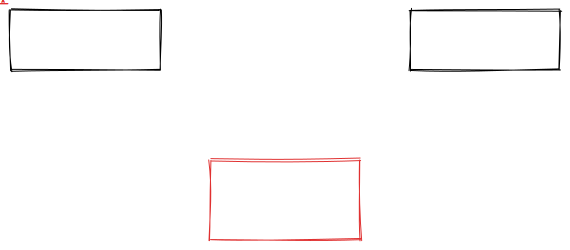

Die Umsetzung des ERDs in eine Tabellenstruktur.
Regel: Der Fremdschlüssel (FK) kommt auf die "N"-Seite (die Seite mit dem "Krähenfuß").
Beispiel: Ein Kunde hat viele Bestellungen.
Regel: Es wird eine Zwischentabelle (Join Table) benötigt.
Beispiel: Student <-> Kurs
Ziel: Redundanzen (Doppelungen) vermeiden und Inkonsistenzen verhindern.
Atomare Werte: Jedes Attribut darf nur einen einzigen Wert enthalten.
Schlecht: Telefonnummern: "0791234567, 0419876543"
Gut: Eigene Tabelle für Telefonnummern oder separate Zeilen.
Nur relevant bei zusammengesetzten Primärschlüsseln.
Jedes Nicht-Schlüssel-Attribut muss vom gesamten Primärschlüssel abhängen, nicht nur von einem Teil.
Keine transitiven Abhängigkeiten.
Nicht-Schlüssel-Attribute dürfen nicht von anderen Nicht-Schlüssel-Attributen abhängen.
Beispiel: PLZ bestimmt den Ort. Ort sollte nicht in der Kundentabelle stehen, wenn PLZ schon drin ist (ausser man vereinfacht es bewusst).
Wandeln Sie das folgende Mini-ERD in ein Tabellenschema um (auf Papier oder Texteditor).
Autor, Buch